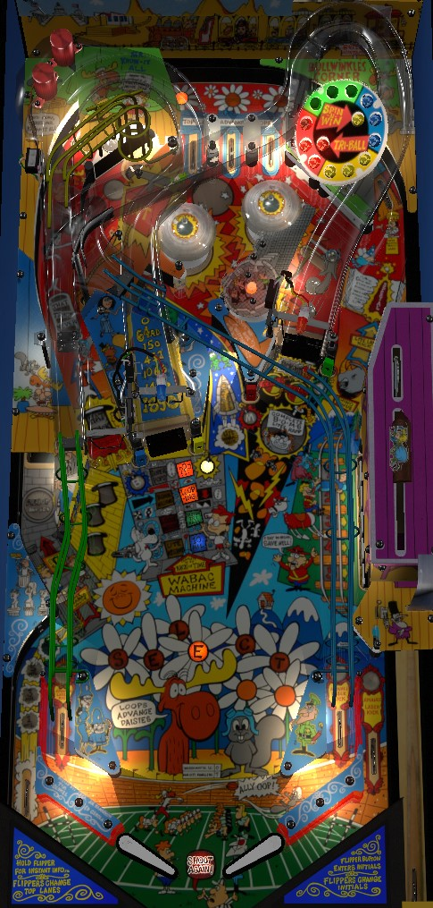

This game almost always referred to as simply Rocky and Bullwinkle. Not to be confused with Rocky (Gottlieb, 1982).
Rocky and Bullwinkle's main source of scoring is the Tri-Ball multiball. Start multiball with 3 shots to each colour Bomb post target followed by a right ramp, or by starting the Instant Tri-Ball mode from the left Wabac (pronounced "wayback") ramp. In multiball, left orbit lights jackpot; left ramp raises jackpot; right ramp scores jackpot, and hitting all four Bomb targets three teams each during multiball lights the right ramp super jackpot for 15 seconds.
The left ramp should be able to be made from either flipper on any Rocky and Bullwinkle game. The right ramp should always be makeable from the left flipper, and can only be backhanded on a very well-maintained game with exceptionally strong flippers- realistically, the right ramp is a forehand-only shot. If the left flipper cannot reliably get the ball up both ramps, try not to play that copy of Rocky and Bullwinkle.
The center lane is makeable from either flipper, but there's a slightly wider timing window if it is shot from the right flipper.
The skill shot requires plunging the ball with the fire button, then using flipper lane change so that the ball comes down through the flashing lane. Since the plunger is a static button rather than a shooter rod, you need to nudge the ball at the top of the playfield to "choose" which award you earn.
Collecting the Lite Select or Super Pops skill shot lights the insert with the same award in front of the left Wabac ramp, giving credit for completing that "mode".
Roll through an unlit (or flashing) top lane to light it. Lane change can be used to rotate lit lanes with the flippers in either direction. Lighting all three top lanes increases the bonus multiplier in the sequence 2x-4x-6x-8x-10x and resets the lanes. I am not aware of any awards given for lane completions after the bonus multiplier is maxed at 10x.
There are several ways to start Tri-Ball, which is the game's only multiball mode.
The standard way involves completing the "pie wheel" positioned above the right ramp by hitting the four Bomb post targets: the blue B and yellow O surround the left ramp, while the red M and green B surround the right ramp.
After Tri-Ball is qualified by spelling Bomb the requisite number of times, shoot the right ramp to instantly start Tri-Ball. At any time during normal play, if you combo the two ramps back and forth, each ramp shot starting with the second will spot one Bomb letter until the combo breaks.
Tri-Ball can also be started instantly as a possible award from the Mystery Select feature or the Wabac Ramp.
Tri-Ball always starts as a 3-ball multiball. If one ball drains, leaving 2 in play, hitting and lighting the three Hat standup targets on the left will re-add the 3rd ball back into play. During multiball, most major playfield features are disabled, and the focus becomes Jackpots. Shoot the left orbit to light the jackpot; a diverter in the orbit will direct the ball to the upper left hole, where it is popped back to the left in lane. Once jackpot is lit, it stays lit until collected, and you have three options: shoot the left orbit again to qualify double jackpot for 8 seconds, shoot the left ramp to add 1,000,000 to the jackpot value, or shoot the right ramp to collect the jackpot (or double jackpot if the left orbit was made within the last 8 seconds). The first jackpot in a multiball is always worth 20,000,000 points. Each subsequent jackpot has a base value 5,000,000 points higher than the previous one. I am not aware of any limit to how high the regular jackpot can be raised, though the jackpot is always 20,000,000 points at the start of each new Tri-Ball. There is no way to triple or quadruple the jackpot by putting multiple balls in the left orbit; doing so will only reset the double jackpot timer to 8 seconds. Nothing special happens if either ramp is shot while the jackpot is not lit.
During multiball, you can also make progress on the "pie wheel" again by hitting Bomb targets. If you complete the entire wheel with 3 shots to each target during multiball, the right ramp will be lit for Bullwinkle's Treasure for 15 seconds, which is a super jackpot worth 100,000,000 points that cannot be raised or doubled. Progress toward qualifying super jackpot is held in memory across multiballs. If 15 seconds pass without collecting the super jackpot, the opportunity goes away, and you will need to hit each Bomb target one more time to requalify it. If super jackpot is qualified while the double jackpot counter is running, the double jackpot chance will instantly be ended, and overriden by the super jackpot.
If multiball ends with no jackpots scored or if the multiball lasted a short amount of time, the right ramp will be lit for Tri-Ball Restart for 15 seconds, which restarts the multiball with 3 balls.
The left "Wabac" (pronounced Way-Back) ramp starts up to 8 various mini-modes, and playing them all starts Back In Time, which is the closest thing Rocky and Bullwinkle has to a wizard mode. At the start of the ball, one of the 8 award in front of the ramp will be flashing; make the ramp to collect that award. After collecting an award, or if there is nothing flashing in front of the ramp, shoot the center lane or the lower left scoop to make the next Wabac award start flashing. The order that you get Wabac awards is completely random and cannot be changed in any way. The 8 Wabac awards are:
Collecting the Lite Select or Super Pops skill shot gives credit for completing the respective Wabac mode. Choosing a Wabac mode as an award from Mystery Select also gives credit for that ramp mode. Modes cannot be started during Tri-Ball, but they can be brought into Tri-Ball. Once all 8 modes have been played, all inserts in front of the ramp start flashing, indicating that Back In Time is ready. Back In Time is the closest thing to a wizard mode that Rocky and Bullwinkle has, but it's worth basically nothing. Back In Time is a 15-second mode where the goal is to shoot the left ramp as many times as possible. Each shot to the left ramp takes you back in time 100 years, starting at 1993 and going backwards. The goal is to reach the year 993 with 10 ramp shots, which scores 50,000,000 points and brings you back to the present. If you shoot the left ramp with 4 seconds or less remaining on Back In Time's clock, the timer will be reset to 4 seconds. Progress towards the year 993 is stored in memory, so if you play Back In Time multiple times, you can continue the same journey. The person who has gone back in time the farthest, or the most recent person to advance to the year 993, gets to enter their initials.
During single ball play, shooting the lower left scoop, or shooting the center lane when Mystery Select is not lit, awards a puzzle piece. Collecting a certain number of puzzle pieces completes a picture, which then starts an animation and a mode. There are 4 puzzles to finish, and each one always corresponds to the same mode; in future versions of the guide, I hope to include pictures of which puzzle corresponds to which mode. The first puzzle needs 3 pieces to finish, with subsequent puzzles requiring one more than the previous, up to a maximum of 6. Which puzzle you get to complete, and therefore which mode you get to play, appears to be completely random. The four modes are:
The Mystery Select is is a feature that allows you to pick one of two random awards. Making a full shot to either orbit scores one letter in the word Select; making consecutive orbit shots with nothing in between will score 2 letters at a time until you miss. Spelling Select lights the center lane for Mystery Select. Spelling Select again while Mystery Select is already lit upgrades it to Super Mystery Select. I don't know what the difference between the two is, because they seem to give the same awards at roughly the same rates. Some of the Mystery Select awards include:
Hit one of the standup targets near the left orbit entrance to light it. Light all 3 targets to qualify Hat Trick at the left orbit. Light all 3 targets while Hat Trick is already qualified to score a 5,000,000 point bonus. When Hat Trick is ready, shoot the left orbit, and the ball will be diverted into the upper left saucer. An entirely too long animation involving both the DMD and backglass ensues, where Bullwinkle the moose pulls an animal out of a hat: it can be a lion, a rhino, or a rabbit, and is completely random.
Completing the drop targets in the lower right enough times starts the Save Nell mode. The number that is flashing in front of the bank denotes how many completions are needed for the next Save Nell: on default settings, the first Save Nell is started after 2 drop target completions, and each subsequent Save Nell needs one more than the last, up to a maximum of 5. During Save Nell, you have 15 seconds to hit any drop target one time to score 25,000,000 points. If you start Save Nell twice in one ball, the second one is worth 50,000,000 points. I have never gotten Save Nell three times in one ball to know if the value continues to build.
This feature is separate from the Looping mode earned from Wabac, and is always available. After 2 consecutive alternating ramp shots, each ramp made until you miss scores 2,000,000 points and spots a Bomb target toward Tri-Ball; the ramp value increases by 1,000,000 for each additional ramp in the combo.
Occasionally, after hitting one of the Bomb post targets that is not lit to give progress toward multiball, a quick-time Defuse the Bomb round will begin as indicated by a distinct beeping siren noise. Hit the launch button several times quickly to score 5,000,000 points.
After reaching the replay score, the right ramp is lit for a 25,000,000 point Victory Lap for 15 seconds.
Rocky and Bullwinkle has a conventional in/out lane setup. The left out lane has a kickback that is lit at the start of each ball and unlights once used. Shoot the right orbit multiple times (usually 2) to relight the kickback. The kickback's value starts at 1,000,000 points. There is one light that moves between the two in lanes and the right out lane based on flipper lane change. Making a lit in/out lane increases the kickback value in the sequence 1,000,000 - 3,000,000 - 5,000,000 - Advance Bonus X - back to 1,000,000.
Base bonus is contributed to by just about every switch in the game; I do not know the exact formula. Base bonus maxes out at 2,000,000 points. Bonus is advanced in the sequence 2x-4x-6x-8x-10x by completing the top lanes or using the left out lane kickback when it is lit for Advance X. If you played Loose Moose on that ball, the points you earned from that mode are added to the bonus; Loose Moose cannot be affected by bonus multiplier. Max bonus is 20,000,000 points before Loose Moose is considered. Bonus and bonus multiplier cannot be carried over to the next ball, and bonus cannot be collected mid-ball.
Special can be set to a point value for competition/novelty play; I do not know what that value is, and I do not know if a similar setting exists for extra ball. Notably, the tournament mode settings do not mention in the manual that they reduce or standardize random features such as Mystery Select, the Puzzle order, or the Wabac order.
The Ramp Looping that spots Bomb letters can be set to start with a 2 ramp combo or never, instead of a 3 ramp combo.
Jackpot can be lit at the start of multiball for free.
The first Save Nell can require anywhere from 1-4 drop target completions; default is 2. Also, Save Nell can be configured so that to earn the prize, you need to complete the entire drop target bank within the 15 seconds instead of just hitting any one target, which would make this mode pretty much impossible.